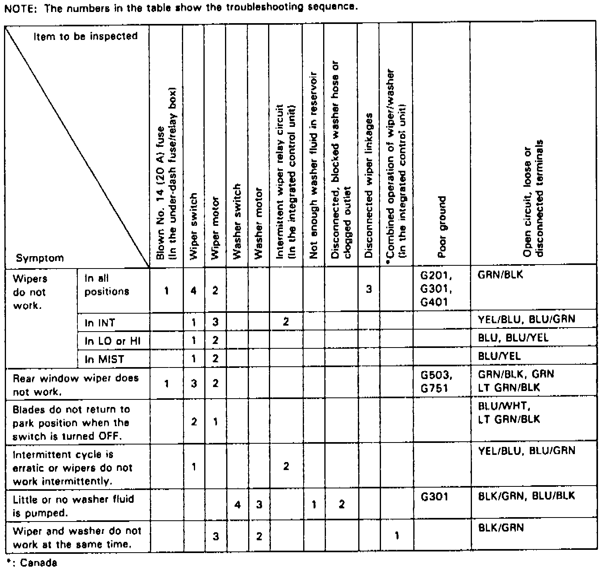

Operation CHARM
: Car repair manuals for everyone.
Home
>>
Acura
>>
1995
>>
Integra (GS-R) L4-1797cc 1.8L DOHC (VTEC)
>>
Repair and Diagnosis
>>
Wiper and Washer Systems
>>
Testing and Inspection
Wiper and Washer Systems: Testing and Inspection
Fig. 2 Troubleshooting Chart:

Refer to
Fig. 2
for troubleshooting procedures.